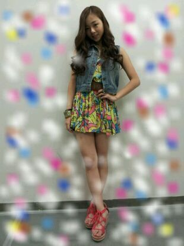
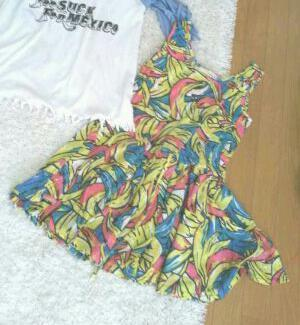

| 2012/09 03 Mon | 川村真洋 握手会 と PARCO だ よ(・ω・)★ ろっ てぃー |
ほっほぉぉい*´ω`*
ん〜 ろてぃ子まる!!!
... 笑)))
ろってぃー♪です(^ー^)
今日は 東京幕張で
個別握手会でした★☆★
まひろ,皆様に会うの
ほんとに楽しみにしていました(⌒‐⌒)
...
ごめんなさい。
まひろが 来てくださった皆様に
来てくださった時より
もっと笑顔と元気になって
帰ってもらわなきゃなっ!
って思ってたのに
まひろが
皆様に 励まされて...。
真剣 考えてくれて...。
色んなことがたまりすぎて
１人で抱えきれなかった。
途中 涙をおさえきれなくなって
泣いてしまって,,,
皆様に心配かけちゃった(´-`。)
すごく不安でいっぱいで
そんな時 皆様がアドバイスを
くれたりして
嬉しかった。
昨日の PARCO劇場のことも
重なって...
本当に悔しかったんです(´-`)
確かに
メディアにたくさん露出
しているのは
選抜のメンバー。
だけど、今回は
一部で本当に
１人１人が
表現力 ダンス 自己PRの
３つの審査をし
それで皆様が審査をする。
とゆうのをするとゆうルール。
前の8番までに私は入るんや!!
とか いっさい思っていません。
『15』 『16』 で
いいんです =^ω^=!!
そのポジションで
全力で楽しんで
躍りたい歌いたい。
よしっ!!
明日も全力で頑張るぜーー★☆★!!!
本当に皆様ありがとう*^^*
大好きっっ*・ω・*)))
ほんでもって
今日の握手会のまひろは,,,


このワンピースどうですかぁ*・ω・*?
バナナ柄 (⌒‐⌒)
とゆうことで
あれ...?
朝だ 笑
よく寝る前にブログ書いてて
途中で知らん間に寝ちゃってて
目覚めた時に あれっ？って
なることがよくあるんですよ(*^^*)笑
とゆーことで
今日も１日 頑張る頑張る。
まひろ大丈夫。頑張る。
皆様が笑顔でいれますよーにっ(^o^)
ほなまたねぇ〜〜(⌒‐⌒)のし